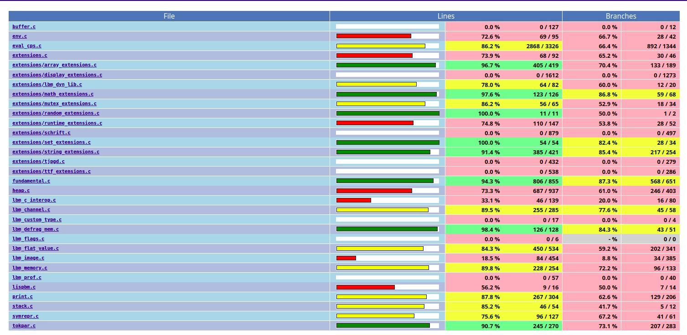
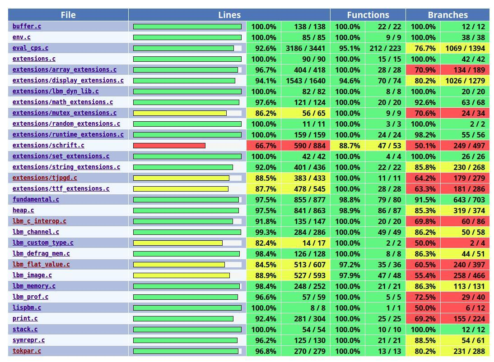
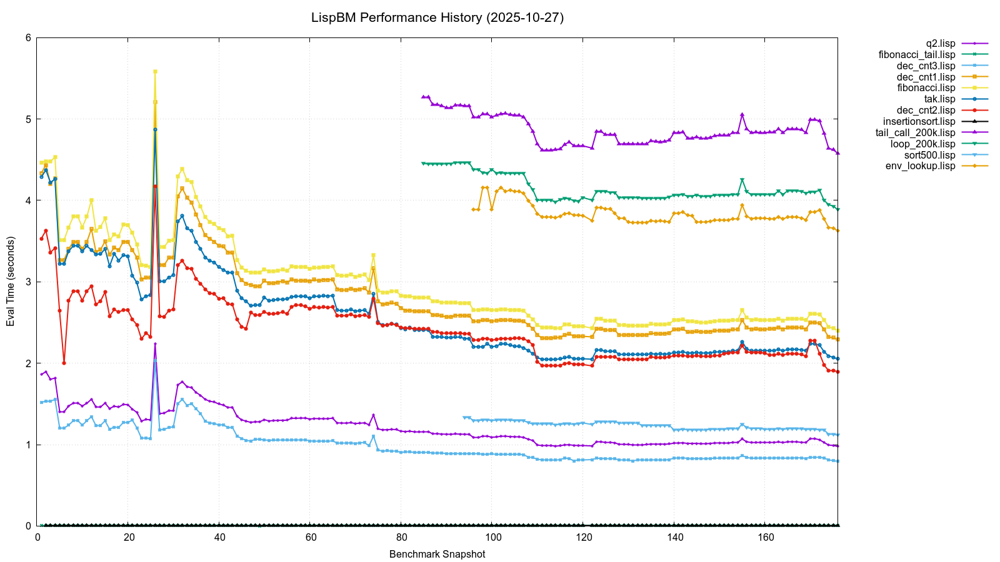
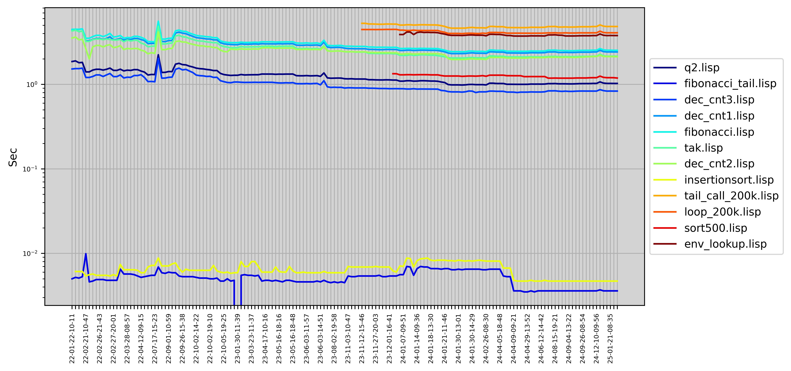

Texts about language development, implementation techniques, and the technical details behind LispBM.
The table below contains test reports for the recent numbered releases of LispBM. The test reports apply to the tagged states with the same numbering on GitHub. The tagged versions of LBM, shown in the table below, have been run through the full test suite and static analysis process. Versions not in this list have not been as rigorously tested. If you want to use LispBM for something serious, please use the most recent tagged version from the table below and keep in mind that testing is never exhaustive and in no way a guarantee of correctness or suitability for any given purpose. A thorough safety and reliability analysis should be performed on the software system where LispBM is integrated as a whole.
We are committed to rigorous testing to make LispBM suitable as a scripting language for any application. These test results provide traceability and document known issues for each version. Improving and developing new testing approaches is an ongoing effort and collaboration is most appreciated.
Please report bugs via the issues tracker on GitHub.
| Testlog | Tagged version | Changelog | Notes |
|---|---|---|---|
| 0.38.0 | tag 0.38.0 | changelog | Image system symbol-name bug fix, Lua-based string pattern matching. |
| 0.37.0 | tag 0.37.0 | changelog | Image issue involving symbol names resolved. |
| 0.36.0 | tag 0.36.0 | changelog | Reader refactoring and bugfixes in various parts. |
| 0.35.0 | tag 0.35.0 | changelog | Performance optimizations, bugfixes and testing framework changes. |
| 0.34.1 | tag 0.34.1 | changelog | Same as 0.34.0 but with bugfixes in the testing framework and tests. |
| 0.34.0 | tag 0.34.0 | changelog | |
| 0.33.0 | tag 0.33.0 | changelog | |
| 0.32.0 | tag 0.32.0 | changelog | |
| 0.31.0 | tag 0.31.0 | changelog | |
| 0.30.0 | tag 0.30.0 | changelog | |
| 0.29.0 | tag 0.29.0 | changelog | |
| 0.28.0 | tag 0.28.0 | changelog | |
| 0.27.0 | tag 0.27.0 | changelog | |
| 0.26.0 | tag 0.26.0 | changelog | |
| 0.25.0 | tag 0.25.0 | changelog | |
| 0.24.0 | tag 0.24.0 | changelog | |
| 0.23.0 | tag 0.23.0 | changelog |
For a complete list of all release changelogs, visit the releases directory.
NOTE: The scan-build directory and Infer result file
infer-x.y.z.txt are empty if no issues are found.
We expand on our testing from time to time but currently apply the following testing methods:
Leading up to version 0.33.0, focus was on improving test coverage. As can be seen from the images below, test coverage has increased significantly and in version 0.33.0 coverage reached 97.4% of functions and 91.7% of lines. There are still improvements needed for branch coverage. Many of the uncovered branches are extremely hard to trigger and in a correctly set-up integration of LispBM it may be impossible to trigger these error conditions. The plan for future testing is to slowly increase coverage with tests designed to trigger even more unlikely edge cases, but overly defensive programming practices (such as conditions that cannot arise in a correctly configured LispBM system) will be removed.


The performance of the LispBM implementation continuously evolves as we introduce new features and engage in optimization efforts. We work to enhance its efficiency for microcontrollers, such as the STM32F4 running at 168MHz.
Below, you can find performance charts illustrating LispBM’s performance on a set of benchmarks:


If you’re interested in the technical details and benchmarks, you can explore our benchmark code here